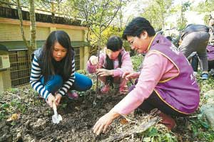

紀念李梅樹 有木學童種梅樹
劉宛琳｜聯合報／新北綜合新聞∣2015年3月14日
三峽著名藝文活動「梅樹月」將於28日展開，李梅樹基金會特別選在李梅樹誕辰日（13）舉辦植梅樹活動，帶著20株梅樹至有木國小教小學生種樹，第一次鏟土、種樹，同學們都很興奮，希望能趕快看到梅樹「開花結果」。
李梅樹紀念館長李景光表示，選在李梅樹大師誕辰日植梅樹，除紀念他一生愛鄉愛土的情懷，也提醒國人梅花是我國國花，愈冷愈開花，傲骨不屈的精神。盼在台灣瘋賞櫻熱潮中，能讓李梅樹的故鄉成為美麗的梅樹城。
植梅樹活動同時進行平板電腦捐贈儀式。龍恩里前里長林富子表示，是三峽一位不願具名的上市櫃公司總經理，在得知偏鄉的有木國小需要平板電腦進行自然、藝術教學時，特別拜託李梅樹基金會代為捐贈20台平板電腦。